<meta charset="utf-8"><title>11/21午後のコラム note貼り付け</title>
<style>
/* one column of numbered paste steps; text steps vs image steps differ by marker */
:root{--bg:#F5F4F0;--card:#FFFFFF;--ink:#1D2321;--mute:#5F665F;--line:#DCDAD2;--btn:#1F5FBF;--btnok:#2E8B4F;--img:#E9F3EC;--imgink:#22663B;--sans:'IBM Plex Sans JP','Hiragino Sans','Noto Sans JP',sans-serif}
@media (prefers-color-scheme:dark){:root:not([data-theme="light"]){--bg:#171A19;--card:#202423;--ink:#ECEDE8;--mute:#A3AAA2;--line:#343937;--btn:#4D8BE6;--btnok:#3FA866;--img:#1E2C23;--imgink:#8FD3A6;color-scheme:dark}}
:root[data-theme="dark"]{--bg:#171A19;--card:#202423;--ink:#ECEDE8;--mute:#A3AAA2;--line:#343937;--btn:#4D8BE6;--btnok:#3FA866;--img:#1E2C23;--imgink:#8FD3A6;color-scheme:dark}
body{background:var(--bg);color:var(--ink);font-family:var(--sans);font-size:15px;line-height:1.75;padding:20px 16px 60px}
main{max-width:680px;margin:0 auto;display:grid;gap:28px}
header h1{font-size:22px;margin:0 0 6px;text-wrap:balance}
header p{margin:0;color:var(--mute);font-size:14px}
nav{display:flex;gap:8px;flex-wrap:wrap;margin-top:12px}
nav a{border:1px solid var(--line);border-radius:999px;padding:4px 14px;color:var(--ink);text-decoration:none;font-size:14px;background:var(--card)}
.part h2{font-size:18px;line-height:1.5;margin:0 0 12px;text-wrap:balance;display:flex;gap:10px;align-items:baseline;flex-wrap:wrap}
.tag{font-size:13px;background:var(--ink);color:var(--bg);border-radius:6px;padding:1px 9px}
.steps{list-style:none;margin:0;padding:0;display:grid;gap:12px}
.st{background:var(--card);border:1px solid var(--line);border-radius:12px;padding:12px;min-width:0}
.hd{display:flex;align-items:center;gap:8px;margin-bottom:8px}
.no{width:26px;height:26px;border-radius:50%;background:var(--btn);color:#fff;display:inline-flex;align-items:center;justify-content:center;font-size:13px;font-weight:700;flex:0 0 26px}
.im .no{background:var(--btnok)}
.hd em{font-style:normal;font-size:12px;background:var(--img);color:var(--imgink);border-radius:6px;padding:0 8px}
.bx{font-size:13.5px;line-height:1.7;border:1px solid var(--line);border-radius:8px;padding:8px 10px;max-height:110px;overflow:auto;overflow-wrap:anywhere}
.bx.tall{max-height:150px}.bx p{margin:0 0 6px}.bx h2{font-size:14px;margin:8px 0 4px}.bx a{color:var(--btn)}
.st img{display:block;width:100%;max-width:100%;border:1px solid var(--line);border-radius:8px}
.sub{font-size:12.5px;color:var(--mute);margin:6px 0 0}
.cp{width:100%;margin-top:8px;padding:12px;border:0;border-radius:10px;background:var(--btn);color:#fff;font:600 15px var(--sans);cursor:pointer}
.cp.ok{background:var(--btnok)}.cp.dl{background:var(--btnok)}.cp:focus-visible{outline:3px solid var(--ink);outline-offset:2px}
.xh{font-size:15px;margin:20px 0 10px}
.fb{font-size:13px;line-height:1.7;margin:8px 0 0;padding:8px 10px;border-radius:8px;background:var(--img);color:var(--imgink)}
.opts{display:grid;grid-template-columns:repeat(auto-fill,minmax(240px,1fr));gap:10px}
.opt{min-width:0}.opt img{display:block;width:100%;border:1px solid var(--line);border-radius:8px}
.ol{display:flex;align-items:center;gap:8px;margin-top:6px}.ol b{font-size:13px;flex:0 0 auto}.ol .on{font-size:12.5px;color:var(--mute);flex:1;min-width:0}.ol .cp{width:auto;flex:0 0 auto;padding:9px 14px}.ol .cp{margin:0;padding:9px}
.toast{font-size:13px;color:var(--mute);margin-top:6px}
</style>
<main><header><h1>11/21午後のコラム note貼り付け</h1><p>いま公開済みは8本です。青い番号は文章、緑は画像です。</p><nav><a href="#p1">1</a><a href="#p2">2</a><a href="#p3">3</a><a href="#p4">4</a><a href="#p5">5</a><a href="#p6">6</a><a href="#p7">7</a><a href="#p8">8</a></nav></header><section class="part" id="p1"><h2><span class="tag">OFF GRID</span>予選最速はアントネッリ、ポールはフェルスタッペン　ラスベガス</h2><p class="sub">サイトに公開：15:49</p><ol class="steps">
<li class="st im"><div class="hd"><span class="no">1</span><b>見出し画像</b><em>画像</em></div>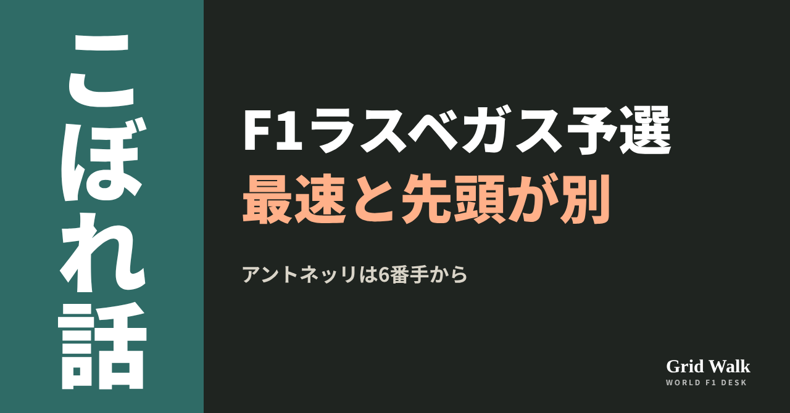<button class="cp dl" data-img="img/vegas-qualifying-verstappen-pole-20261121.png" data-name="vegas-qualifying-verstappen-pole-20261121_見出し画像.png">ダウンロード</button></li>
<li class="st"><div class="hd"><span class="no">2</span><b>タイトル</b></div><div class="bx" id="p1t">予選最速はアントネッリ、ポールはフェルスタッペン　ラスベガス</div><button class="cp" data-plain="p1t">タイトルをコピー</button></li>
<li class="st"><div class="hd"><span class="no">3</span><b>本文</b></div><div class="bx tall" id="p1r"><p>第21戦ラスベガスGPの予選で、いちばん速かったのは新王者のアンドレア・キミ・アントネッリでした。それでも、決勝でポールポジションに並ぶのは、レッドブルのマックス・フェルスタッペンです。アントネッリには5グリッド降格があり、6番手からスタートする予定です。イギリスのSky Sportsが11月21日に伝えました。</p><p>降格後のスタート順と、降格の理由を書いたコラムへの案内はサイトで → <a href="https://f1gridwalk.github.io/lens/vegas-qualifying-verstappen-pole-20261121/?utm_source=note&amp;utm_campaign=vegas-qualifying-verstappen-pole-20261121">https://f1gridwalk.github.io/lens/vegas-qualifying-verstappen-pole-20261121/?utm_source=note&amp;utm_campaign=vegas-qualifying-verstappen-pole-20261121</a></p><h2>最後の1周に、ぎりぎり間に合った</h2><p>Sky Sportsによると、Q3の終わりは混乱しました。アントネッリは、最後の速い周回に入れる時間にぎりぎりでコントロールラインを越え、その周はずっと、レーシングブルズの車の後ろで大きなスリップストリーム（前の車が作る空気の流れ）を受けて走りました。タイムはフェルスタッペンを0.258秒上回り、メルセデスのジョージ・ラッセルは、アントネッリから0.331秒遅れの3番手でした。</p><p>降格の理由は、今季6基目のエンジン（ICE）を使ったことで、くわしい経緯はターボのコラムの追記 https://f1gridwalk.github.io/lens/mercedes-aduo-turbo-vegas-20261118/ にあります。</p><h2>降格で入れ替わったスタート順</h2><p>Sky Sportsが伝えた降格後の予定では、フロントローはフェルスタッペンとラッセルです。3番手にマクラーレンのランド・ノリス、4番手にレッドブルのアイザック・ハジャー、5番手にレーシングブルズのアービッド・リンドブラッドが続きます。リンドブラッドにとっては、これまででいちばん前のグリッドです。</p><p>予選7番手だったマクラーレンのオスカー・ピアストリは、10グリッド降格で17番手からになる予定です。新しいエンジン（ICE）を載せて今季4基の枠を超えたことによる降格で、11月19日のコラム https://f1gridwalk.github.io/lens/piastri-vegas-grid-penalty-20261119/ で紹介しました。これで、レーシングブルズのリアム・ローソンが7番手に上がります。</p><p>アルピーヌのピエール・ガスリーとフランコ・コラピントは、予選を通して速さを見せながら、Q3のアウトラップで混雑に巻き込まれ、予選は9番手と10番手でした。スタートは8番手と9番手の予定です。ウィリアムズのカルロス・サインツも、5基目のターボを使ったため10グリッド降格を受けます（11月21日のコラム https://f1gridwalk.github.io/lens/sainz-vegas-grid-penalty-20261121/ ）。</p><h2>フェラーリは2台ともQ2まで</h2><p>Sky Sportsによると、フェラーリは寒さと長い直線に苦しみ、シャルル・ルクレールとルイス・ハミルトンがそろってQ2で姿を消しました。フェラーリのドライバーが1人もQ3に進めなかったのは、2024年のカナダGP以来です。ピアストリの降格で、2人は10番手と11番手からスタートする予定です。フェラーリの車が抱える弱点は、11月21日のコラム https://f1gridwalk.github.io/lens/ferrari-vegas-double-trap-20261121/ で紹介しました。</p><p>F1公式のドライバーズ順位では、フェルスタッペンが279点で2位、ラッセルが262点で3位、ハミルトンが261点で4位です。2位を争う3人のうち、2人がフロントローに並び、1人は11番手から追う形になりました。</p><p>編集部としては、この決勝の見どころは、優勝の行方と同じくらい、ドライバーズ2位の争いだと見ています。17点差のフェルスタッペンとラッセルが隣どうしでスタートし、ラッセルと1点差のハミルトンは、9つ後ろの11番手から追いかけるからです。</p><p><strong>予選でいちばん速くても、スタートは6番手から。アントネッリは、ラスベガスの決勝で何位まで上がれると思いますか？</strong></p><p>━━━━━━━━━━</p><p><strong>F1 Grid Walk では、世界のF1ニュースを毎日日本語でまとめています。</strong></p><p>海外の記事の要約を、毎日載せています。</p><p><a href="https://f1gridwalk.github.io/">https://f1gridwalk.github.io/</a></p><p>ほかの海外記事も読みたい方は、F1 Grid Walkへ。</p><p><a href="https://f1gridwalk.github.io/lens/vegas-qualifying-verstappen-pole-20261121/">https://f1gridwalk.github.io/lens/vegas-qualifying-verstappen-pole-20261121/</a></p><p>━━━━━━━━━━</p><p><a href="https://www.skysports.com/f1/news/13614575/las-vegas-gp-kimi-antonelli-fastest-but-max-verstappen-on-pole-from-george-russell-after-dramatic-qualifying">出典：Sky Sports（イギリス）</a></p><p><a href="https://www.formula1.com/en/results/2026/drivers">出典：F1公式サイト（イギリス）</a></p><p><a href="https://www.formula1.com/en/racing/2026">出典：F1公式サイト（イギリス）</a></p></div><button class="cp" data-rich="p1r">本文をコピー</button></li>
<li class="st"><div class="hd"><span class="no">4</span><b>ハッシュタグ</b></div><div class="bx" id="p1h">#F1 #F1jp #ラスベガスGP #アントネッリ #フェルスタッペン #ラッセル #予選 #F1こぼれ話 #OFFGRID</div><button class="cp" data-plain="p1h">タグをコピー</button></li>
</ol><h3 class="xh">X</h3><ol class="steps">
<li class="st im"><div class="hd"><b>X用の画像</b><em>画像</em></div>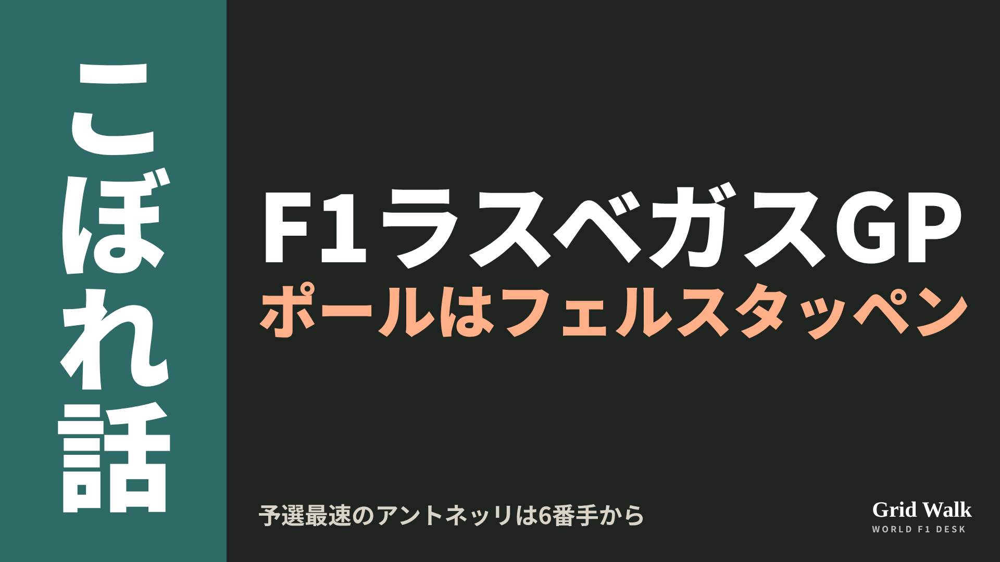<button class="cp dl" data-img="img/x_vegas-qualifying-verstappen-pole-20261121.png" data-name="x_vegas-qualifying-verstappen-pole-20261121.png">ダウンロード</button></li>
<li class="st"><div class="hd"><b>① noteをシェアするときの文</b></div><div class="bx" id="p1x0">ラスベガスGPの予選、最速は新王者のアントネッリ。ただ5グリッド降格のため、ポールはフェルスタッペンに移り、隣にはラッセルが並ぶ予定です。ピアストリとサインツにも降格があります。noteにまとめました #F1jp #ラスベガスGP #フェルスタッペン</div><button class="cp" data-plain="p1x0">コピー</button></li>
<li class="st"><div class="hd"><b>② ①への返信</b></div><div class="bx" id="p1x1">ほかの海外記事も読みたい方は、F1 Grid Walkへ。
https://f1gridwalk.github.io/lens/vegas-qualifying-verstappen-pole-20261121/?utm_source=x&amp;utm_campaign=vegas-qualifying-verstappen-pole-20261121</div><button class="cp" data-plain="p1x1">コピー</button></li>
<li class="st"><div class="hd"><b>③ ②への返信</b></div><div class="bx" id="p1x2">毎日の海外F1ニュースは、日本語でこちらにまとめています。
https://f1gridwalk.github.io/</div><button class="cp" data-plain="p1x2">コピー</button></li>
</ol></section><section class="part" id="p2"><h2><span class="tag">OFF GRID</span>フェルスタッペン「壁へ押しやられた」　FP3の審議2件は警告と不問</h2><p class="sub">サイトに公開：15:50</p><ol class="steps">
<li class="st im"><div class="hd"><span class="no">1</span><b>見出し画像</b><em>画像</em></div>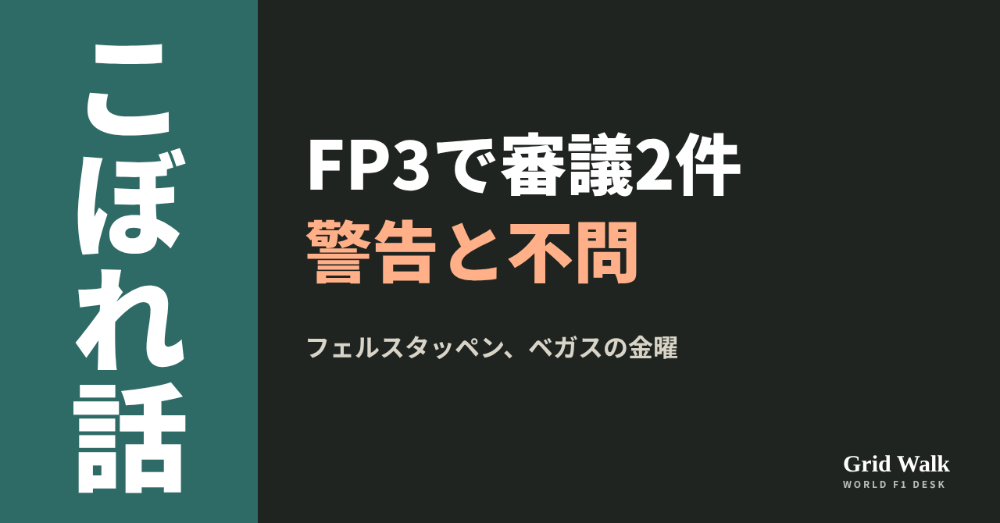<button class="cp dl" data-img="img/verstappen-fp3-investigations-20261121.png" data-name="verstappen-fp3-investigations-20261121_見出し画像.png">ダウンロード</button></li>
<li class="st"><div class="hd"><span class="no">2</span><b>タイトル</b></div><div class="bx" id="p2t">フェルスタッペン「壁へ押しやられた」　FP3の審議2件は警告と不問</div><button class="cp" data-plain="p2t">タイトルをコピー</button></li>
<li class="st"><div class="hd"><span class="no">3</span><b>本文</b></div><div class="bx tall" id="p2r"><p>ラスベガスGPの3回目のフリー走行（FP3）で、レッドブルのマックス・フェルスタッペンが、2件の審議の対象になりました。相手はメルセデスのジョージ・ラッセルと、アルピーヌのフランコ・コラピント。現地11月20日夜のことで、イギリスのPlanetF1が伝えています。</p><p>審議を伝えた記事の要約と、警告と戒告の違いを説明したルール辞典はサイトで → <a href="https://f1gridwalk.github.io/lens/verstappen-fp3-investigations-20261121/?utm_source=note&amp;utm_campaign=verstappen-fp3-investigations-20261121">https://f1gridwalk.github.io/lens/verstappen-fp3-investigations-20261121/?utm_source=note&amp;utm_campaign=verstappen-fp3-investigations-20261121</a></p><blockquote><p>「あいつに壁へ押しやられた」（フェルスタッペン、チーム無線、PlanetF1／イギリス）</p></blockquote><p>結論は、ラッセルとの件が警告、コラピントとの件は措置なしでした。PlanetF1の記事の要約は https://f1gridwalk.github.io/news/en-planetf1-verstappen-double-investigation/ にあります。</p><h2>終盤の14コーナー、抜き合いの末に</h2><p>PlanetF1によると、1件目はセッションの終盤です。フェルスタッペンはバックストレートでラッセルを抜き、左の14コーナーへのブレーキングで進路を変えました。抜き返そうと内側に入ったラッセルと並び、2台は接触したように見え、前に出たのはラッセルでした。裁定の文面も接触を認めています（RacingNews365）。ラッセルは無線で、チームにリプレーを見たかと尋ねています。</p><blockquote><p>「ハハ！　楽しいことになってるね？」（ラッセル、チーム無線、RacingNews365／イギリス）</p></blockquote><p>2人と両チームの代表は、現地18時にスチュワードに呼ばれました（PlanetF1）。FIAの文書一覧には、3号車（フェルスタッペン）の14コーナーでの不規則な運転についての文書37が載っています。</p><blockquote><p>「3号車は予想より早くブレーキをかけ、ブレーキング中に進路を変えた」「この状況でブレーキング中に進路を変えたことは、求められる運転の水準を下回っていた」（スチュワードの裁定、RacingNews365／イギリス）</p></blockquote><p>より重い罰に当たるほど深刻ではない、という判断です（RaceFans）。ラッセルへの罰は伝えられていません。警告は順位もグリッドも変わらない処分で、戒告との違いはルール辞典 https://f1gridwalk.github.io/deep/rules/warning/ で。</p><h2>タイヤを温める蛇行は、よくあること</h2><p>2件目は開始から数分後、16コーナーでのことです（F1公式、FIAの文書の題）。冷え込むなか、フェルスタッペンはタイヤを温めようと車を左右に振り、後ろのコラピントは急に内側へよけて抜いていきました（PlanetF1）。</p><p>RaceFansによると、フェルスタッペンは、同じラップの前半に起きたエンジンの問題で、エネルギーをそれ以上使えなかったと説明しました。スチュワードは、エネルギーの問題や小さな速度差に加え、抜かれると気づいてすぐ蛇行をやめ、相手を通した点を挙げ、措置なしとしています（RacingNews365）。</p><blockquote><p>「スチュワードは、速いラップの準備でタイヤの温度を保つために蛇行するのはよくあることだと認めた」（スチュワードの裁定、RacingNews365／イギリス）</p></blockquote><p>同じFP3では、ウィリアムズのアレクサンダー・アルボンが、レッドブルのアイザック・ハジャーとの17コーナーの件で、動きが予測できず危険になりうるとして戒告を受けました。アルボンもタイヤの温度を保つためだったと説明しています（RaceFans）。</p><h2>2位争いは17点差</h2><p>F1公式によると、ドライバーズランキングでフェルスタッペンは279点の2位、ラッセルは262点の3位で、差は17点です。FP3はラッセルが1分34秒041で最速、フェルスタッペンは6番手でした（F1公式）。</p><p>編集部としては、2件を分けたのは動きの大きさより、相手にとって読める動きだったかどうかだと見ています。同じタイヤの温めでも、アルボンは戒告でした。</p><p><strong>練習走行でのブレーキング中の進路変更に、警告という判断。あなたは軽いと思いますか、それとも妥当だと思いますか？</strong></p><p>━━━━━━━━━━</p><p><strong>F1 Grid Walk では、世界のF1ニュースを毎日日本語でまとめています。</strong></p><p>海外の記事の要約を、毎日載せています。</p><p><a href="https://f1gridwalk.github.io/">https://f1gridwalk.github.io/</a></p><p>ほかの海外記事も読みたい方は、F1 Grid Walkへ。</p><p><a href="https://f1gridwalk.github.io/lens/verstappen-fp3-investigations-20261121/">https://f1gridwalk.github.io/lens/verstappen-fp3-investigations-20261121/</a></p><p>━━━━━━━━━━</p><p><a href="https://www.planetf1.com/news/max-verstappen-george-russell-las-vegas-grand-prix-2026-fia">出典：PlanetF1（イギリス）</a></p><p><a href="https://racingnews365.com/max-verstappen-discovers-stewards-verdict-after-george-russell-las-vegas-clash">出典：RacingNews365（イギリス）</a></p><p><a href="https://racingnews365.com/max-verstappen-discovers-fate-after-second-las-vegas-stewards-investigation">出典：RacingNews365（イギリス）</a></p><p><a href="https://www.racefans.net/2026/11/21/verstappen-given-official-warning-for-incident-with-russell-in-final-practice/">出典：RaceFans（イギリス）</a></p><p><a href="https://www.fia.com/documents/championships/fia-formula-one-world-championship-14/season/season-2026-2072">出典：FIA（国際）</a></p><p><a href="https://www.formula1.com/en/latest/article/fp3-russell-goes-fastest-from-antonelli-and-norris-during-final-practice-in-las-vegas.3qwe57vQf1Qjrm2tdp7Vfy">出典：F1公式サイト（イギリス）</a></p><p><a href="https://www.formula1.com/en/results/2026/drivers">出典：F1公式サイト（イギリス）</a></p></div><button class="cp" data-rich="p2r">本文をコピー</button></li>
<li class="st"><div class="hd"><span class="no">4</span><b>ハッシュタグ</b></div><div class="bx" id="p2h">#F1 #F1jp #フェルスタッペン #ラッセル #コラピント #ラスベガスGP #スチュワード #F1こぼれ話 #OFFGRID</div><button class="cp" data-plain="p2h">タグをコピー</button></li>
</ol><h3 class="xh">X</h3><ol class="steps">
<li class="st im"><div class="hd"><b>X用の画像</b><em>画像</em></div>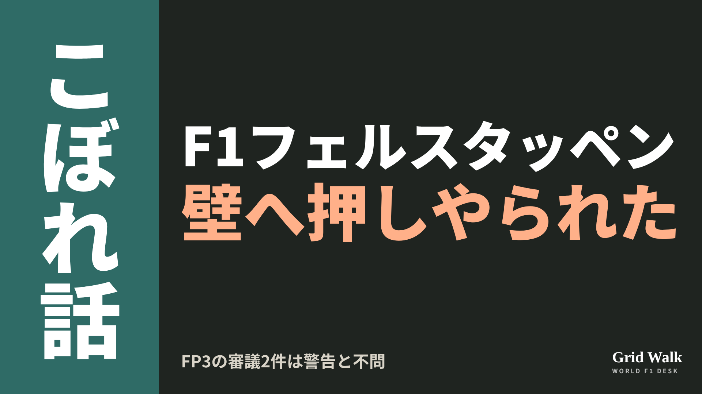<button class="cp dl" data-img="img/x_verstappen-fp3-investigations-20261121.png" data-name="x_verstappen-fp3-investigations-20261121.png">ダウンロード</button></li>
<li class="st"><div class="hd"><b>① noteをシェアするときの文</b></div><div class="bx" id="p2x0">ラスベガスGPのFP3で、フェルスタッペンが2件の審議を受けました。無線では「壁へ押しやられた」。ラッセルとの件は警告、コラピントとの件は措置なしです。noteにまとめました #F1jp #フェルスタッペン #ラッセル</div><button class="cp" data-plain="p2x0">コピー</button></li>
<li class="st"><div class="hd"><b>② ①への返信</b></div><div class="bx" id="p2x1">ほかの海外記事も読みたい方は、F1 Grid Walkへ。
https://f1gridwalk.github.io/lens/verstappen-fp3-investigations-20261121/?utm_source=x&amp;utm_campaign=verstappen-fp3-investigations-20261121</div><button class="cp" data-plain="p2x1">コピー</button></li>
<li class="st"><div class="hd"><b>③ ②への返信</b></div><div class="bx" id="p2x2">毎日の海外F1ニュースは、日本語でこちらにまとめています。
https://f1gridwalk.github.io/</div><button class="cp" data-plain="p2x2">コピー</button></li>
</ol></section><section class="part" id="p3"><h2><span class="tag">OFF GRID</span>ピアストリ「そのフロアは僕自身は持っていない」　新フロアは誰に</h2><p class="sub">サイトに公開：15:51</p><ol class="steps">
<li class="st im"><div class="hd"><span class="no">1</span><b>見出し画像</b><em>画像</em></div>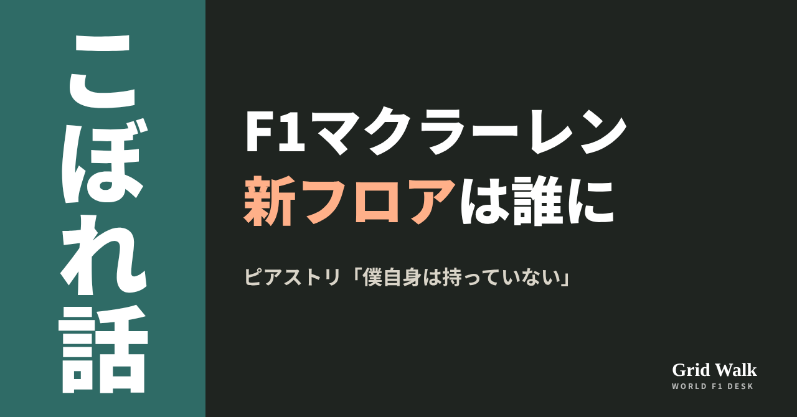<button class="cp dl" data-img="img/mclaren-new-floor-which-car-20261121.png" data-name="mclaren-new-floor-which-car-20261121_見出し画像.png">ダウンロード</button></li>
<li class="st"><div class="hd"><span class="no">2</span><b>タイトル</b></div><div class="bx" id="p3t">ピアストリ「そのフロアは僕自身は持っていない」　新フロアは誰に</div><button class="cp" data-plain="p3t">タイトルをコピー</button></li>
<li class="st"><div class="hd"><span class="no">3</span><b>本文</b></div><div class="bx tall" id="p3r"><p>新しいフロアは、この雨でも試せるのか。マクラーレンのオスカー・ピアストリは、そう聞かれて肩をすくめました。オランダのRacingNews365が11月20日に伝えた、ラスベガスGPのFP2のあとの一幕です。</p><p>元の記事へのリンクと、ピアストリのグリッド降格のコラムへの案内はサイトで → <a href="https://f1gridwalk.github.io/lens/mclaren-new-floor-which-car-20261121/?utm_source=note&amp;utm_campaign=mclaren-new-floor-which-car-20261121">https://f1gridwalk.github.io/lens/mclaren-new-floor-which-car-20261121/?utm_source=note&amp;utm_campaign=mclaren-new-floor-which-car-20261121</a></p><blockquote><p>「実は、僕らが何をしたのか、はっきりはわからない」「そのフロアは僕自身は持っていないから、ランドがそれで走ったのかどうか、よくわからない」（ピアストリ、RacingNews365／オランダ）</p></blockquote><p>RacingNews365は見出しで、マクラーレンがノリスとピアストリで作戦を分けたと伝え、小見出しを「ノリスに新しいフロア」としています。ただ、記事の中に、ノリスだけに付けるという説明はありません。サイトの要約は https://f1gridwalk.github.io/news/nl-racingnews365-mclaren-floor-split/ にあります。</p><h2>雨で、新しいフロアは出番なし</h2><p>F1公式サイトによると、木曜のFP1を、マクラーレンは2台とも走りませんでした。FP2では2台とも早めにコースに出て、どのチームより先にインターミディエイトに替えています。F1公式の結果では、FP2はジョージ・ラッセル（メルセデス）が1分47秒272で最速。ピアストリは1.181秒差の5位、ノリスは1.565秒差の7位でした。</p><p>チームのレース部門を率いるランディ・シンは、ノリスも新しいフロアを使わなかったと話しています。</p><blockquote><p>「残念ながら、今日は彼はそれで走らなかった」「あのコンディションでは、新しいフロアを車に付けるのは賢明ではないと考えた」（シン、RacingNews365／オランダ）</p></blockquote><p>F1公式サイトによると、シンは、雨の中ではいくつかのセンサーをテープでふさぐ必要があり、欲しいデータがいつも取れるわけではなかったとも説明しました。リスクがあるうえ、この天候では学べることも少ない、という判断です。RacingNews365の英語版は、そのリスクを、フロアを傷めるおそれと書いています。</p><h2>ノリスだけの部品なのか</h2><p>はっきりしているのは、ピアストリが「持っていない」と話したことだけです。RacingNews365の英語版は、2027年を見すえた新しいフロアがノリスとピアストリのために届いたと書き、F1公式サイトは、マクラーレンがラスベガスに持ち込んだ新しいフロアとだけ伝えています。ピアストリがなぜ持っていないのかは、どの記事も説明していません。</p><p>ピアストリ本人は、雨でも試す意味はあると見ています。</p><blockquote><p>「それでも、テストすることはできる」（ピアストリ、RacingNews365／オランダ）</p></blockquote><p>乾いた路面ほど参考にはならないかもしれないが、それで何かが変わるとは思わない、とも話しています（RacingNews365）。ノリスも、F1公式サイトにこう話していました。</p><blockquote><p>「明日はやるべき大事な作業がある。特に、新しい部品のテストだ」（ノリス、F1公式サイト）</p></blockquote><p>F1公式の結果では、金曜のFP3はラッセルが1分34秒041で最速、ノリスは0.974秒差の3位、ピアストリは1.763秒差の12位でした。FP3で新しいフロアをどちらが使ったかは、伝えられていません。ピアストリは新しいエンジンを載せたため、10グリッド降格を受けます（F1公式サイト）。降格の話はコラム https://f1gridwalk.github.io/lens/piastri-vegas-grid-penalty-20261119/ で、去年の失格からの巻き返しはコラム https://f1gridwalk.github.io/lens/mclaren-vegas-redemption-20261121/ で。</p><p>編集部としては、ピアストリの一言は、この週末の2台が同じ仕様ではないかもしれないことを示していると見ています。シンは翌日の走行で使いたいと話しましたが、どちらの車に付けるのかは、チームはまだ説明していないからです。</p><p><strong>新しいフロアは、ノリスだけのものなのか、2台ともに付くのか。あなたはどう見ますか？</strong></p><p>━━━━━━━━━━</p><p><strong>F1 Grid Walk では、世界のF1ニュースを毎日日本語でまとめています。</strong></p><p>海外の記事の要約を、毎日載せています。</p><p><a href="https://f1gridwalk.github.io/">https://f1gridwalk.github.io/</a></p><p>ほかの海外記事も読みたい方は、F1 Grid Walkへ。</p><p><a href="https://f1gridwalk.github.io/lens/mclaren-new-floor-which-car-20261121/">https://f1gridwalk.github.io/lens/mclaren-new-floor-which-car-20261121/</a></p><p>━━━━━━━━━━</p><p><a href="https://racingnews365.nl/mclaren-splitst-strategie-norris-en-piastri-ik-heb-die-vloer-niet">出典：RacingNews365（オランダ）</a></p><p><a href="https://racingnews365.com/mclaren-missing-vital-evidence-as-rain-destroys-las-vegas-plan">出典：RacingNews365（イギリス）</a></p><p><a href="https://www.formula1.com/en/latest/article/what-the-teams-said-thursday-in-las-vegas-2026.4jnMZFzCSpX9y63f0rmnQW">出典：F1公式サイト（イギリス）</a></p><p><a href="https://www.formula1.com/en/latest/article/piastri-shares-early-impressions-of-new-engine-in-las-vegas-as-he-prepares-for-grid-penalty.1EhZ4bKxodItgmXEX2euQf">出典：F1公式サイト（イギリス）</a></p><p><a href="https://www.formula1.com/en/results/2026/races/1300/las-vegas/practice/2">出典：F1公式サイト（イギリス）</a></p><p><a href="https://www.formula1.com/en/results/2026/races/1300/las-vegas/practice/3">出典：F1公式サイト（イギリス）</a></p><p><a href="https://www.formula1.com/en/racing/2026">出典：F1公式サイト（イギリス）</a></p></div><button class="cp" data-rich="p3r">本文をコピー</button></li>
<li class="st"><div class="hd"><span class="no">4</span><b>ハッシュタグ</b></div><div class="bx" id="p3h">#F1 #F1jp #マクラーレン #ピアストリ #ノリス #ラスベガスGP #アップデート #F1こぼれ話 #OFFGRID</div><button class="cp" data-plain="p3h">タグをコピー</button></li>
</ol><h3 class="xh">X</h3><ol class="steps">
<li class="st im"><div class="hd"><b>X用の画像</b><em>画像</em></div>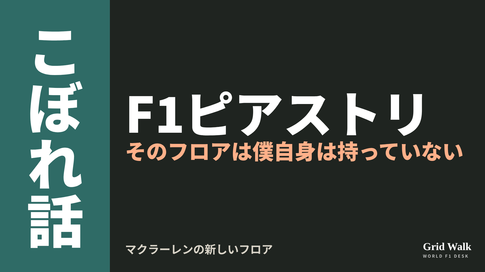<button class="cp dl" data-img="img/x_mclaren-new-floor-which-car-20261121.png" data-name="x_mclaren-new-floor-which-car-20261121.png">ダウンロード</button></li>
<li class="st"><div class="hd"><b>① noteをシェアするときの文</b></div><div class="bx" id="p3x0">マクラーレンがラスベガスに持ち込んだ新しいフロア。ピアストリは「そのフロアは僕自身は持っていない」。雨のFP2ではノリスも使いませんでした。どちらの車のためのものかは、まだはっきりしません。noteにまとめました #F1jp #マクラーレン #ピアストリ</div><button class="cp" data-plain="p3x0">コピー</button></li>
<li class="st"><div class="hd"><b>② ①への返信</b></div><div class="bx" id="p3x1">ほかの海外記事も読みたい方は、F1 Grid Walkへ。
https://f1gridwalk.github.io/lens/mclaren-new-floor-which-car-20261121/?utm_source=x&amp;utm_campaign=mclaren-new-floor-which-car-20261121</div><button class="cp" data-plain="p3x1">コピー</button></li>
<li class="st"><div class="hd"><b>③ ②への返信</b></div><div class="bx" id="p3x2">毎日の海外F1ニュースは、日本語でこちらにまとめています。
https://f1gridwalk.github.io/</div><button class="cp" data-plain="p3x2">コピー</button></li>
</ol></section><section class="part" id="p4"><h2><span class="tag">OFF GRID</span>小松代表、ベアマン新契約に「疑いはない」　独誌はサイン待ちと</h2><p class="sub">サイトに公開：15:52</p><ol class="steps">
<li class="st im"><div class="hd"><span class="no">1</span><b>見出し画像</b><em>画像</em></div>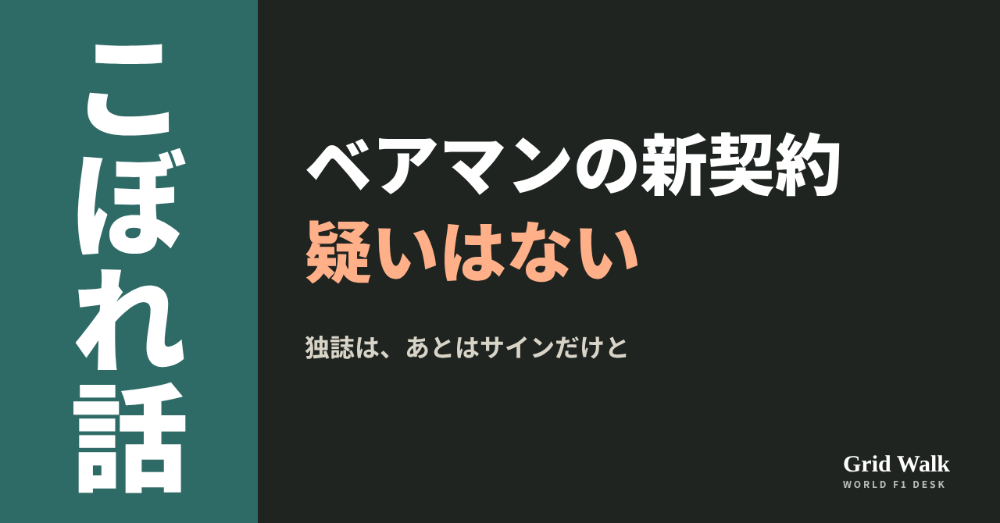<button class="cp dl" data-img="img/bearman-haas-contract-formality-20261121.png" data-name="bearman-haas-contract-formality-20261121_見出し画像.png">ダウンロード</button></li>
<li class="st"><div class="hd"><span class="no">2</span><b>タイトル</b></div><div class="bx" id="p4t">小松代表、ベアマン新契約に「疑いはない」　独誌はサイン待ちと</div><button class="cp" data-plain="p4t">タイトルをコピー</button></li>
<li class="st"><div class="hd"><span class="no">3</span><b>本文</b></div><div class="bx tall" id="p4r"><p>ハースの小松礼雄代表が、オリバー・ベアマンの2027年の契約について言い切りました。ドイツのMotorsport-Totalは11月20日、見出しで新しい契約はもう形式だけだと書き、記事の最後を、足りないのはサインだけ、と結びました（同じ記事はFormel1.deにも掲載）。</p><p>元の記事へのリンクと、契約オプションの解説はサイトで → <a href="https://f1gridwalk.github.io/lens/bearman-haas-contract-formality-20261121/?utm_source=note&amp;utm_campaign=bearman-haas-contract-formality-20261121">https://f1gridwalk.github.io/lens/bearman-haas-contract-formality-20261121/?utm_source=note&amp;utm_campaign=bearman-haas-contract-formality-20261121</a></p><blockquote><p>「オリーはうちで走りたいし、うちもオリーに乗ってほしい。だから、そうなることに疑いはありません」「来年、彼がクルマに乗っているのは間違いない。そうなります」（小松礼雄代表、F1公式サイト／イギリス）</p></blockquote><p>ラスベガスでの言葉です。RacingNews365によると、ベアマンが契約のないことへの不満を口にした数時間後、同誌などに話しました。ベアマンの不満は、11月19日のコラム https://f1gridwalk.github.io/lens/bearman-2027-contract-wait-20261119/ で紹介しています。</p><h2>Skyへの言葉は、いつのものか</h2><p>Motorsport-Totalの記事の中心は、小松代表がSkyに話した言葉です。両方の側に一緒に続けるはっきりした意思があると話し、こう続けたといいます。</p><blockquote><p>「できるだけ早く、まとめるつもりです」（小松礼雄代表、Skyに。Motorsport-Total／ドイツ）</p></blockquote><p>ただ、Skyにいつ、どこで話したのかは、記事にありません。10月末のメキシコシティGPの週末にも、両者が一緒に続けたいのはとてもはっきりしている、とほぼ同じ言い方をしていました（10月31日のコラム https://f1gridwalk.github.io/lens/komatsu-bearman-rumours-20261031/ ）。ラスベガスでの発言と確かめられるのは、冒頭の言葉のほうです。</p><p>遅れているわけについて、小松代表は中身を話していません。</p><blockquote><p>「詳しくは話せませんが、関係するすべての人と、細かいところを今すり合わせています」（小松礼雄代表、Motorsport-Total／ドイツ）</p></blockquote><p>Motorsport-Totalは、小松代表が前に否定した年俸の報道に触れ、問題は2027年より先の選択肢かもしれないと書いています。ベアマンはまだフェラーリと結びついていて、ルイス・ハミルトンの後任の候補と見られている、とも。</p><h2>21歳の2人で</h2><p>記事によると、キャデラックがバルテリ・ボッタスを発表したことで、2027年の席で正式に決まっていないのは、ハースのラファエル・カマラの隣だけになりました。ベアマンで決まれば、ハースは21歳の2人という、グリッドでいちばん若い組み合わせになります。エステバン・オコンが抜けてベテランがいなくなることも、小松代表は問題と見ていないといいます。カマラは今週末が2回目のF1の週末です（F1公式サイト）。</p><blockquote><p>「オリーがこの2年近くで、どれだけ速く成長したかは、みんなが見てきました」「とても、とても力強く走っていて、フィードバックもいい」（小松礼雄代表、Motorsport-Total／ドイツ）</p></blockquote><p>クルマに競争力がなく、点から遠かったマイアミとモントリオールのころ。ベアマンはひどく悔しがりながらもとても良く走り、どうすればチームをやる気にさせられるか分かっていた、と小松代表は挙げています。</p><blockquote><p>「あれは本当に、彼のクラスを示していました」「ええ、彼はチームリーダーになる準備ができていると思います」（小松礼雄代表、Motorsport-Total／ドイツ）</p></blockquote><p>編集部としては、ハースの側の言葉は、メキシコの、きっとそうなると思う、からラスベガスの、疑いはない、へと、少しずつ強くなっていると見ています。ただ、関係者すべてと調整中である以上、サインの日はハースだけでは決められないとも見ています。契約オプションの仕組みは https://f1gridwalk.github.io/deep/rules/contract-option/ で。サイトの要約は https://f1gridwalk.github.io/news/de-motorsporttotal-bearman-haas-contract/ にあります。</p><p><strong>代表がここまで言い切っても、まだ発表のないベアマンの契約。シーズンが終わる前に発表があると思いますか？</strong></p><p>━━━━━━━━━━</p><p><strong>F1 Grid Walk では、世界のF1ニュースを毎日日本語でまとめています。</strong></p><p>海外の記事の要約を、毎日載せています。</p><p><a href="https://f1gridwalk.github.io/">https://f1gridwalk.github.io/</a></p><p>ほかの海外記事も読みたい方は、F1 Grid Walkへ。</p><p><a href="https://f1gridwalk.github.io/lens/bearman-haas-contract-formality-20261121/">https://f1gridwalk.github.io/lens/bearman-haas-contract-formality-20261121/</a></p><p>━━━━━━━━━━</p><p><a href="https://www.formel1.de/news/news/2026-11-20/nach-kritik-neuer-bearman-vertrag-laut-haas-nur-noch-formsache">出典：Formel1.de（元はMotorsport-Total.com）（ドイツ）</a></p><p><a href="https://de.motorsport.com/f1/news/nach-kritik-neuer-bearman-vertrag-laut-haas-nur-noch-formsache-26112025/3457496/">出典：Motorsport.com ドイツ語版（Motorsport-Total.comと同じ記事）（ドイツ）</a></p><p><a href="https://www.formula1.com/en/latest/article/komatsu-insists-there-is-no-doubt-over-bearmans-2027-haas-seat-after-britons-frustrations.1lCOdGv5mDv2FcqDshxnYB">出典：F1公式サイト（イギリス）</a></p><p><a href="https://racingnews365.com/haas-respond-to-oliver-bearman-contract-frustrations-with-unwavering-stance">出典：RacingNews365（イギリス）</a></p></div><button class="cp" data-rich="p4r">本文をコピー</button></li>
<li class="st"><div class="hd"><span class="no">4</span><b>ハッシュタグ</b></div><div class="bx" id="p4h">#F1 #F1jp #ベアマン #ハース #小松礼雄 #カマラ #ラスベガスGP #2027年 #F1こぼれ話 #OFFGRID</div><button class="cp" data-plain="p4h">タグをコピー</button></li>
</ol><h3 class="xh">X</h3><ol class="steps">
<li class="st im"><div class="hd"><b>X用の画像</b><em>画像</em></div>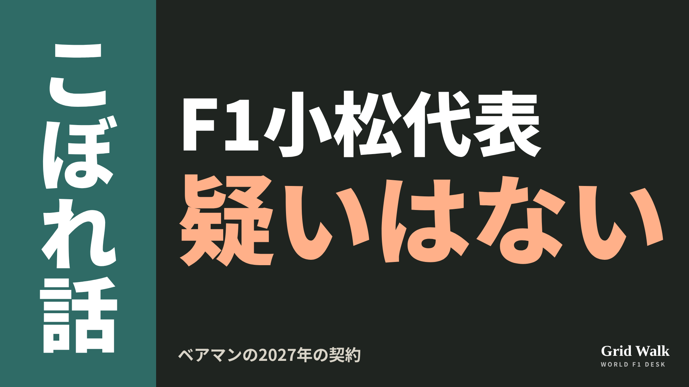<button class="cp dl" data-img="img/x_bearman-haas-contract-formality-20261121.png" data-name="x_bearman-haas-contract-formality-20261121.png">ダウンロード</button></li>
<li class="st"><div class="hd"><b>① noteをシェアするときの文</b></div><div class="bx" id="p4x0">ハースの小松代表が、ベアマンが来年も乗ることに「疑いはない」。ドイツのMotorsport-Totalは、新しい契約はあとサインだけと書いています。noteにまとめました #F1jp #ベアマン #ハース</div><button class="cp" data-plain="p4x0">コピー</button></li>
<li class="st"><div class="hd"><b>② ①への返信</b></div><div class="bx" id="p4x1">ほかの海外記事も読みたい方は、F1 Grid Walkへ。
https://f1gridwalk.github.io/lens/bearman-haas-contract-formality-20261121/?utm_source=x&amp;utm_campaign=bearman-haas-contract-formality-20261121</div><button class="cp" data-plain="p4x1">コピー</button></li>
<li class="st"><div class="hd"><b>③ ②への返信</b></div><div class="bx" id="p4x2">毎日の海外F1ニュースは、日本語でこちらにまとめています。
https://f1gridwalk.github.io/</div><button class="cp" data-plain="p4x2">コピー</button></li>
</ol></section><section class="part" id="p5"><h2><span class="tag">OFF GRID</span>コラピント、ネット中傷に「僕たちだけで直すのはとても難しい」</h2><p class="sub">サイトに公開：15:53</p><ol class="steps">
<li class="st im"><div class="hd"><span class="no">1</span><b>見出し画像</b><em>画像</em></div>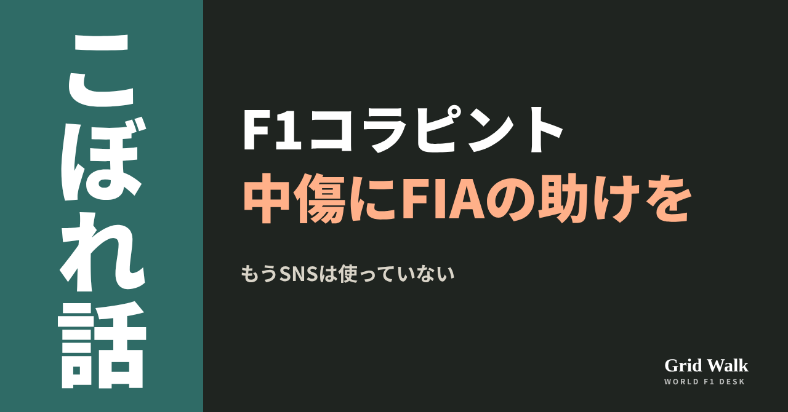<button class="cp dl" data-img="img/colapinto-online-abuse-20261121.png" data-name="colapinto-online-abuse-20261121_見出し画像.png">ダウンロード</button></li>
<li class="st"><div class="hd"><span class="no">2</span><b>タイトル</b></div><div class="bx" id="p5t">コラピント、ネット中傷に「僕たちだけで直すのはとても難しい」</div><button class="cp" data-plain="p5t">タイトルをコピー</button></li>
<li class="st"><div class="hd"><span class="no">3</span><b>本文</b></div><div class="bx tall" id="p5r"><p>ネット上の中傷を、ドライバーだけで止めることはできるのか。アルピーヌのフランコ・コラピントは、助けが要ると答えました。ドライバー全員、FIA、F1、そしてみんなの助けだといいます。イギリスのPlanetF1が11月20日に伝えています。</p><p>元の記事へのリンクと、ネット中傷へのF1とFIAの取り組みをまとめた用語解説はサイトで → <a href="https://f1gridwalk.github.io/lens/colapinto-online-abuse-20261121/?utm_source=note&amp;utm_campaign=colapinto-online-abuse-20261121">https://f1gridwalk.github.io/lens/colapinto-online-abuse-20261121/?utm_source=note&amp;utm_campaign=colapinto-online-abuse-20261121</a></p><p>ブラジルのグランデ・プレミオによると、これは11月19日、ラスベガスGPのメディアデーに、同メディアの記者の質問に答えたものです。サイトの要約は https://f1gridwalk.github.io/news/en-planetf1-colapinto-online-abuse/ にあります。</p><h2>SNSはもう使っていない</h2><p>動画のあと状況は良くなったかと聞かれると、コラピントはこう答えました。</p><blockquote><p>「わからない。もうSNSは使っていないから、そっちが教えてよ。でも、役に立ったと思う」（コラピント、PlanetF1／イギリス）</p></blockquote><p>アメリカのRACERは10月16日、コラピントがスペイン語の動画で、ファンがほかのドライバーやチームメート、メカニック、エンジニアを攻撃していると話し、変えなければならないと訴えたと伝えました。</p><blockquote><p>「君たちは、僕のことも、僕の将来のことも助けていない」（コラピント、RACER／アメリカ）</p></blockquote><p>PlanetF1は、ここ数か月で目立った例として、コラピントのファンからランド・ノリス、ピエール・ガスリー、アルピーヌのチームに向けられた中傷を挙げています。一方で、今季中傷をしているのは彼のファンだけではなく、数の多さで目立っている面もある、とも書いています。いきさつは用語解説 https://f1gridwalk.github.io/deep/rules/online-abuse/ にまとめています。</p><h2>僕たちだけで直すのは難しい</h2><p>それでも、コラピントは自分の力だけでは限りがあると話します。</p><blockquote><p>「でも、僕たちだけで直すのはとても難しいと思う」「僕の側では、できるかぎりのことをした。でも、僕たちだけじゃなく、ほかのたくさんの人の助けも要る。ドライバー全員、FIA、F1、みんなの助けが要るんだ」（コラピント、PlanetF1／イギリス）</p></blockquote><p>ほかのドライバーの名前も挙げました。</p><blockquote><p>「マックス（フェルスタッペン）も、少し前にこの話をしていた。ルイス（ハミルトン）もだ。たくさんの人が話していて、それも本当に助けになる」（コラピント、PlanetF1／イギリス）</p></blockquote><p>自分のファンは全体として落ち着いてきたと見ています。そのうえで、こうも話しました。</p><blockquote><p>「キーボードで何を書くにしても、スマホの陰からだよね。面と向かってなら、きっとそんなことは言わないはずだ」（コラピント、PlanetF1／イギリス）</p></blockquote><h2>FIAは2023年から運動</h2><p>FIAは2023年、モハメド・ビン・スライエム会長のもとで、United Against Online Abuse（ネット中傷に団結して立ち向かう）という運動を始めました。FIAの2025年9月の発表では、パートナーは70を超えていました。会長は、そのときこう述べています。</p><blockquote><p>「FIAは、選手、オフィシャル、ボランティア、ファンをデジタル上の害から守るために、United Against Online Abuseの運動を始めた」（ビン・スライエム、FIA）</p></blockquote><p>コラピントは、今年スポーツとして一歩は進んだとしながらも、まだ足りないと話しています。</p><blockquote><p>「でも、毎週末この話をしたいわけじゃない。もちろんね」「でも、すべてのアスリートにとって、とても大事な話なんだ」（コラピント、PlanetF1／イギリス）</p></blockquote><p>編集部としては、本人も話すとおり、ドライバーが自分のファンに呼びかけるだけでは限りがあると見ています。ドライバーが毎週末この話をしなくて済むようになるかどうかが、取り組みが効いているかの目安になりそうです。</p><p><strong>ネット上の中傷を減らすために、いちばん動くべきなのは誰だと思いますか？</strong></p><p>━━━━━━━━━━</p><p><strong>F1 Grid Walk では、世界のF1ニュースを毎日日本語でまとめています。</strong></p><p>海外の記事の要約を、毎日載せています。</p><p><a href="https://f1gridwalk.github.io/">https://f1gridwalk.github.io/</a></p><p>ほかの海外記事も読みたい方は、F1 Grid Walkへ。</p><p><a href="https://f1gridwalk.github.io/lens/colapinto-online-abuse-20261121/">https://f1gridwalk.github.io/lens/colapinto-online-abuse-20261121/</a></p><p>━━━━━━━━━━</p><p><a href="https://www.planetf1.com/news/franco-colapinto-fia-online-abuse">出典：PlanetF1（イギリス）</a></p><p><a href="https://grandepremio.com/en/f1/colapinto-quits-social-media-f1-abuse-fia-las-vegas/">出典：Grande Prêmio（英語版）（ブラジル）</a></p><p><a href="https://racer.com/2026/10/16/colapinto-to-abusive-fans-you-re-not-helping-me-or-my-future-">出典：RACER（アメリカ）</a></p><p><a href="https://www.fia.com/news/uaoa-partners-signify-protect-athletes-online-abuse">出典：FIA（フランス）</a></p></div><button class="cp" data-rich="p5r">本文をコピー</button></li>
<li class="st"><div class="hd"><span class="no">4</span><b>ハッシュタグ</b></div><div class="bx" id="p5h">#F1 #F1jp #アルピーヌ #コラピント #ネット中傷 #FIA #ラスベガスGP #F1こぼれ話 #OFFGRID</div><button class="cp" data-plain="p5h">タグをコピー</button></li>
</ol><h3 class="xh">X</h3><ol class="steps">
<li class="st im"><div class="hd"><b>X用の画像</b><em>画像</em></div>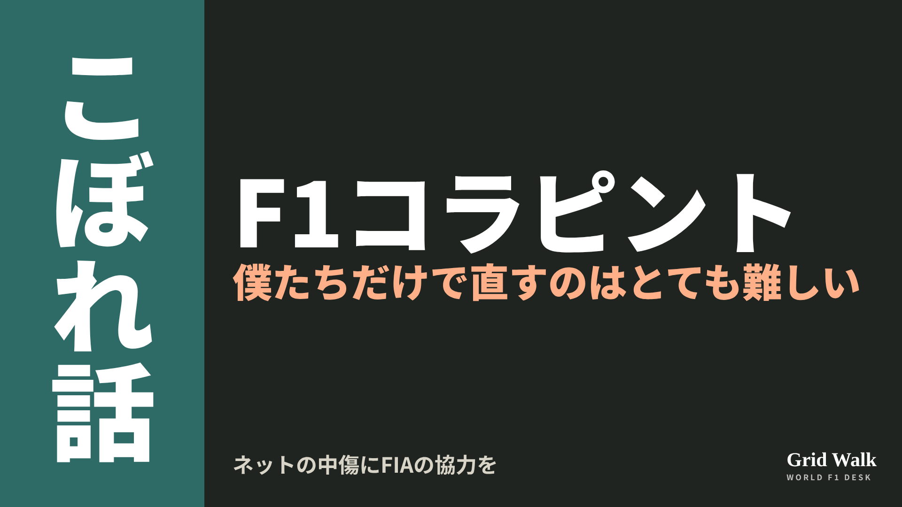<button class="cp dl" data-img="img/x_colapinto-online-abuse-20261121.png" data-name="x_colapinto-online-abuse-20261121.png">ダウンロード</button></li>
<li class="st"><div class="hd"><b>① noteをシェアするときの文</b></div><div class="bx" id="p5x0">アルピーヌのコラピントが、ネットの中傷について「僕たちだけで直すのはとても難しい」。ドライバー全員とFIA、F1の助けが要ると話しました。noteにまとめました #F1jp #コラピント</div><button class="cp" data-plain="p5x0">コピー</button></li>
<li class="st"><div class="hd"><b>② ①への返信</b></div><div class="bx" id="p5x1">ほかの海外記事も読みたい方は、F1 Grid Walkへ。
https://f1gridwalk.github.io/lens/colapinto-online-abuse-20261121/?utm_source=x&amp;utm_campaign=colapinto-online-abuse-20261121</div><button class="cp" data-plain="p5x1">コピー</button></li>
<li class="st"><div class="hd"><b>③ ②への返信</b></div><div class="bx" id="p5x2">毎日の海外F1ニュースは、日本語でこちらにまとめています。
https://f1gridwalk.github.io/</div><button class="cp" data-plain="p5x2">コピー</button></li>
</ol></section><section class="part" id="p6"><h2><span class="tag">OFF GRID</span>ナイキ、24年ぶりにF1へ　2027年から公式の制服とウェア</h2><p class="sub">サイトに公開：15:54</p><ol class="steps">
<li class="st im"><div class="hd"><span class="no">1</span><b>見出し画像</b><em>画像</em></div>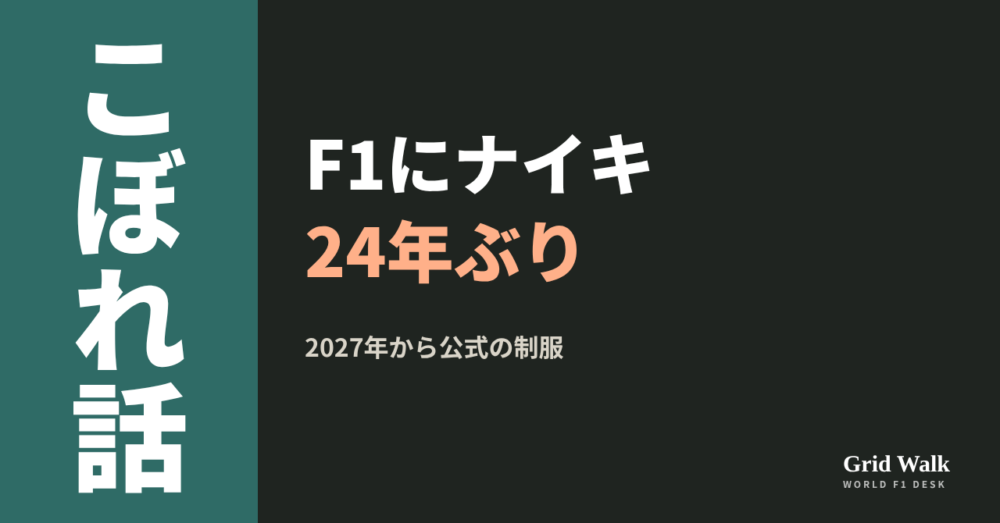<button class="cp dl" data-img="img/nike-f1-return-20261121.png" data-name="nike-f1-return-20261121_見出し画像.png">ダウンロード</button></li>
<li class="st"><div class="hd"><span class="no">2</span><b>タイトル</b></div><div class="bx" id="p6t">ナイキ、24年ぶりにF1へ　2027年から公式の制服とウェア</div><button class="cp" data-plain="p6t">タイトルをコピー</button></li>
<li class="st"><div class="hd"><span class="no">3</span><b>本文</b></div><div class="bx tall" id="p6r"><p>ナイキがF1に戻ってきます。F1は日本時間11月20日、ナイキと長期の提携を結んだと公式サイトで発表しました。2027年から、ナイキはF1の公式パートナーになり、公式のアパレルと制服のサプライヤーを務めます。</p><p>元の記事へのリンクと、チームウェアの契約の解説はサイトで → <a href="https://f1gridwalk.github.io/lens/nike-f1-return-20261121/?utm_source=note&amp;utm_campaign=nike-f1-return-20261121">https://f1gridwalk.github.io/lens/nike-f1-return-20261121/?utm_source=note&amp;utm_campaign=nike-f1-return-20261121</a></p><p>イギリスのThe Raceは11月20日、ナイキがドイツのプーマに代わって、F1の公式のアパレルと制服の供給元になると伝えました。ナイキがF1に関わるのは24年ぶりだといいます。サイトの要約は https://f1gridwalk.github.io/news/en-therace-nike-f1-apparel/ にあります。</p><h2>最初の品は、ラスベガスの店に</h2><p>F1公式によると、提携の中身は大きく3つです。世界のF1の会場で働くスタッフが着る、2つのブランドの名前が入った制服。ファン向けの靴や服、小物のコレクション。そして女性のシリーズ、F1アカデミーでも、ナイキは公式パートナーと公式スポーツアパレルパートナーになります。The Raceによると、F1アカデミーでもプーマの役目を引き継ぎます。</p><p>正式な始まりは2027年ですが、最初の品はもう出ています。The Raceによると、ラスベガスGPの名前が入った限定のコレクションを、11月20日にベネチアン・ホテルにあるF1ハブと、ラスベガスのナイキの店で売り出すとしていました。契約の年数は、F1公式もThe Raceも書いていません。</p><blockquote><p>「F1を動かしているのは、競争とスピード、そして絶えず革新しようとする力だ」「それはアスリートの考え方で、ナイキも同じ考え方を持っている」（ナイキのエリオット・ヒル社長兼CEO、The Race／イギリス）</p></blockquote><blockquote><p>「F1は、かつてない世界的な成長の中にあり、何億人ものファンに届いている」「スポーツと文化、人を奮い立たせるものが交わるところに立てる、ナイキならではの力が、次の章に入る我々にとって、ナイキを理想のパートナーにしている」（F1のステファノ・ドメニカリ社長兼CEO、The Race／イギリス）</p></blockquote><h2>前回はシューマッハの靴</h2><p>F1公式サイトの2025年9月の記事によると、ナイキがF1に入ったのは1996年です。ベネトンで2回王座を取ったミハエル・シューマッハが、フェラーリに移った年でした。ナイキはシューマッハのためのレース用の靴を作り、本人のサインが入った限定のスニーカー、エア ズーム シューも出しています。関わりは2002年まで続きました。</p><p>今季にも小さな接点がありました。The Raceによると、2026年のマイアミGPで、ナイキはキャデラックのチームと靴を作りました。作ったのは2足だけで、チームのCEOダン・タウリスらに贈られたそうです。</p><h2>プーマは2024年から</h2><p>入れ替わる形のプーマは、2023年5月にF1と複数年の提携を発表し、2024年からサーキットで働くF1のスタッフ全員に制服を出してきました（F1公式）。F1アカデミーとの提携は、2024年2月に発表しています（F1公式）。F1公式のナイキの発表は、プーマには触れていません。</p><p>また、The Raceによると、以前F1に制服を出していたアルファタウリは、FIAのアパレルの供給元として、少なくとも2027年の終わりまで続けます。今回の話はF1そのものの服で、チームの服はそれぞれのチームが別にメーカーと契約しています。くわしくは用語集 https://f1gridwalk.github.io/deep/rules/teamwear/ で。レッドブルとアディダスをめぐる報道は https://f1gridwalk.github.io/lens/verstappen-adidas-20261105/ にまとめています。</p><p>編集部としては、目に見える最初の変化は、来年のパドックでスタッフの服のロゴが替わることだと見ています。前回（1996〜2002年）は、一人のドライバーの靴から話が広がりました。今度はF1全体の服から始まる、という違いがありそうです。</p><p><strong>F1の服がナイキになることで、F1の見え方は変わると思いますか？</strong></p><p>━━━━━━━━━━</p><p><strong>F1 Grid Walk では、世界のF1ニュースを毎日日本語でまとめています。</strong></p><p>海外の記事の要約を、毎日載せています。</p><p><a href="https://f1gridwalk.github.io/">https://f1gridwalk.github.io/</a></p><p>ほかの海外記事も読みたい方は、F1 Grid Walkへ。</p><p><a href="https://f1gridwalk.github.io/lens/nike-f1-return-20261121/">https://f1gridwalk.github.io/lens/nike-f1-return-20261121/</a></p><p>━━━━━━━━━━</p><p><a href="https://www.the-race.com/business/nike-to-return-to-f1-after-24-years/">出典：The Race（イギリス）</a></p><p><a href="https://www.formula1.com/en/latest/article/formula-1-and-nike-join-forces-to-shape-the-future-of-sport-and-culture.W36MoCI5DL9I0evuX1xtd">出典：F1公式サイト（イギリス）</a></p><p><a href="https://www.formula1.com/en/latest/article/from-nike-to-benetton-iconic-fashion-partnerships-that-shaped-formula-1.6dpBXobLVpXXQ2sMw1ZD9y">出典：F1公式サイト（イギリス）</a></p><p><a href="https://www.formula1.com/en/latest/article/puma-to-become-official-f1-provider-in-new-multi-year-partnership.52c5F3sDQHehb7rgf2gC1H">出典：F1公式サイト（イギリス）</a></p><p><a href="https://www.formula1.com/en/latest/article/puma-to-become-official-partner-of-f1-academy.7Dvh82nraij0QDcPu6AS5O">出典：F1公式サイト（イギリス）</a></p></div><button class="cp" data-rich="p6r">本文をコピー</button></li>
<li class="st"><div class="hd"><span class="no">4</span><b>ハッシュタグ</b></div><div class="bx" id="p6h">#F1 #F1jp #ナイキ #プーマ #F1アカデミー #ラスベガスGP #F1ビジネス #F1こぼれ話 #OFFGRID</div><button class="cp" data-plain="p6h">タグをコピー</button></li>
</ol><h3 class="xh">X</h3><ol class="steps">
<li class="st im"><div class="hd"><b>X用の画像</b><em>画像</em></div>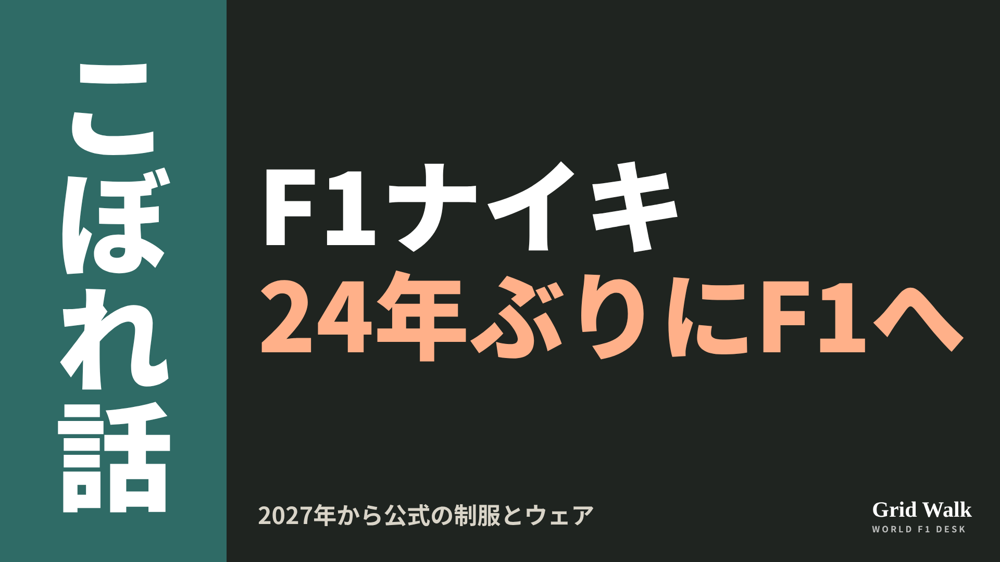<button class="cp dl" data-img="img/x_nike-f1-return-20261121.png" data-name="x_nike-f1-return-20261121.png">ダウンロード</button></li>
<li class="st"><div class="hd"><b>① noteをシェアするときの文</b></div><div class="bx" id="p6x0">F1がナイキとの長期提携を発表しました。2027年から公式のアパレルと制服を担います。英The Raceによると、プーマに代わる形で、F1に関わるのは24年ぶり。前回はシューマッハの靴でした。noteにまとめました #F1jp #ナイキ</div><button class="cp" data-plain="p6x0">コピー</button></li>
<li class="st"><div class="hd"><b>② ①への返信</b></div><div class="bx" id="p6x1">ほかの海外記事も読みたい方は、F1 Grid Walkへ。
https://f1gridwalk.github.io/lens/nike-f1-return-20261121/?utm_source=x&amp;utm_campaign=nike-f1-return-20261121</div><button class="cp" data-plain="p6x1">コピー</button></li>
<li class="st"><div class="hd"><b>③ ②への返信</b></div><div class="bx" id="p6x2">毎日の海外F1ニュースは、日本語でこちらにまとめています。
https://f1gridwalk.github.io/</div><button class="cp" data-plain="p6x2">コピー</button></li>
</ol></section><section class="part" id="p7"><h2><span class="tag">OFF GRID</span>カタールGPもタイヤは27周まで、とピレリ技術者　狙いは2回ストップ</h2><p class="sub">サイトに公開：15:55</p><ol class="steps">
<li class="st im"><div class="hd"><span class="no">1</span><b>見出し画像</b><em>画像</em></div>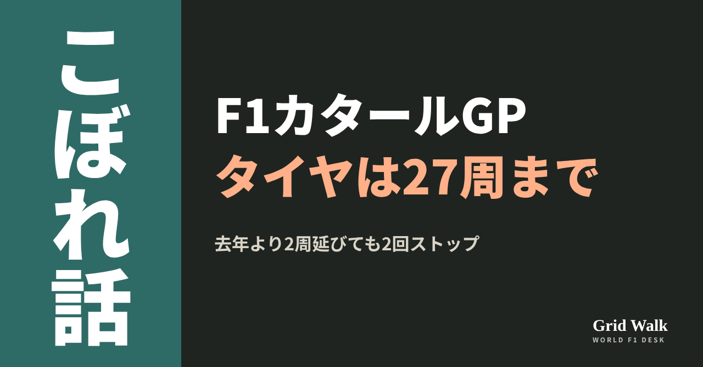<button class="cp dl" data-img="img/qatar-tyre-stint-limit-20261121.png" data-name="qatar-tyre-stint-limit-20261121_見出し画像.png">ダウンロード</button></li>
<li class="st"><div class="hd"><span class="no">2</span><b>タイトル</b></div><div class="bx" id="p7t">カタールGPもタイヤは27周まで、とピレリ技術者　狙いは2回ストップ</div><button class="cp" data-plain="p7t">タイトルをコピー</button></li>
<li class="st"><div class="hd"><span class="no">3</span><b>本文</b></div><div class="bx tall" id="p7r"><p>来週のカタールGPでも、タイヤ1セットで走れる周回数に上限が設けられ、今年は27周までになると、ドイツのMotorsport-Total.comが11月20日に伝えました（記事はformel1.deに掲載）。ルサイルのコースでタイヤを守るための決まりで、数字はピレリのチーフエンジニア、シモーネ・ベラが明かしています。去年の25周から2周延びましたが、決勝は57周なので、2回のピットストップが要る形は変わりません。</p><p>周回の上限のしくみをまとめたルールブックと、元の記事へのリンクはサイトで → <a href="https://f1gridwalk.github.io/lens/qatar-tyre-stint-limit-20261121/?utm_source=note&amp;utm_campaign=qatar-tyre-stint-limit-20261121">https://f1gridwalk.github.io/lens/qatar-tyre-stint-limit-20261121/?utm_source=note&amp;utm_campaign=qatar-tyre-stint-limit-20261121</a></p><p>F1公式によると、カタールGPは第22戦で、現地11月27〜29日です。持ち込まれるのは、いちばん硬いC1・C2・C3です（イギリスのTyrepress）。サイトのニュース要約は https://f1gridwalk.github.io/news/de-motorsporttotal-pirelli-qatar-stint-limit/ にあります。</p><blockquote><p>「ルールの上では同じ制限だ。ただし周回数は25ではなく27になる」（ベラ、Motorsport-Total.com／ドイツ）</p></blockquote><p>ベラは、イギリスのRacingNews365をふくむ一部の報道陣にも、この数字を認めています。</p><h2>25周の理由は左フロント</h2><p>上限ができたのは去年です。イギリスのAutosportによると、2025年はピレリがFIA、F1、チームと合意して、1セット25周までとしました。2024年のレースを調べると、いくつかのタイヤ、とくに左フロントが摩耗の限界に達していたためです。Motorsport-Total.comによると、2024年は30周を超えるスティントを試したチームもありました。コースは1周5.4kmで、16のコーナーの多くが中高速です。</p><p>Motorsport-Total.comによると、去年の決勝では残り50周でセーフティカーが出ると、マクラーレンの2台以外は全員が7周目のあとにピットに入り、あとは1回の交換で済みました。マクラーレンはそこから2回止まる必要があり、マックス・フェルスタッペンとのタイトル争いのなかで、勝てたかもしれないレースを手放したといいます。</p><h2>29周なら1回で足りた</h2><p>なぜ27周なのか。ベラによると、台上の試験で、2周延ばしても特別な危険はないとわかりました。</p><blockquote><p>「周回の上限を残すのは、ただ2回のピットストップを強いるためだ」（ベラ、Motorsport-Total.com／ドイツ）</p></blockquote><p>29周にすると、2回のストップを強いることにはならなかったといいます。問題は前のタイヤの局所的な摩耗の大きさで、平均25〜26周で摩耗が100%に達するそうです。そうなると、トレッドがもう内部の構造を守らず、大きな荷重や横向きの力、高いカーカスの温度がそのままかかります。一方で、100%すり減ってもタイムは大きく落ちないため、はっきり遅くなるまで走り続けることもできてしまいます。上限は、内部の構造の上で何周も走る危険を避けるためだ、という説明です。</p><p>セーフティカーの後ろの周もふくめ、決勝の周はすべて数え、守らなければ失格になる見込みだと、Motorsport-Total.comは伝えています。セットごとの残りの周回数は、土曜の走行の終わりにピレリが知らせるそうです。</p><blockquote><p>「今年はもうスプリントの週末ではないから、ほんの少し楽になる」（ベラ、Motorsport-Total.com／ドイツ）</p></blockquote><p>決まりのしくみは、ルールブック https://f1gridwalk.github.io/deep/rules/tyre-stint-limit/ で。</p><p>編集部としては、今年の焦点も去年と同じく、セーフティカーが出るタイミングだと見ています。すべての周が数えられる以上、早い時間のセーフティカーでピットに入るかどうかが、そのまま残りの作戦を決めるからです。</p><p><strong>上限が27周でも、2回のストップは変わらないカタールGP。早めのセーフティカーでピットに入るのが正解だと、あなたは思いますか？</strong></p><p>━━━━━━━━━━</p><p><strong>F1 Grid Walk では、世界のF1ニュースを毎日日本語でまとめています。</strong></p><p>海外の記事の要約を、毎日載せています。</p><p><a href="https://f1gridwalk.github.io/">https://f1gridwalk.github.io/</a></p><p>ほかの海外記事も読みたい方は、F1 Grid Walkへ。</p><p><a href="https://f1gridwalk.github.io/lens/qatar-tyre-stint-limit-20261121/">https://f1gridwalk.github.io/lens/qatar-tyre-stint-limit-20261121/</a></p><p>━━━━━━━━━━</p><p><a href="https://www.formel1.de/news/grand-prix-berichte/2026-11-20/maximal-27-runden-pirelli-gibt-wieder-stintlaenge-in-katar-vor">出典：Formel1.de（元はMotorsport-Total.com）（ドイツ）</a></p><p><a href="https://racingnews365.com/f1-to-re-introduce-major-qatar-grand-prix-rule-over-persistent-fears">出典：RacingNews365（イギリス）</a></p><p><a href="https://www.autosport.com/f1/news/pirelli-mandates-25-lap-stints-for-qatar-gp-over-tyre-concerns/10777404/">出典：Autosport（イギリス）</a></p><p><a href="https://www.tyrepress.com/2026/11/pirelli-confirms-tyre-compound-selections-for-final-rounds-of-2026-f1-season/">出典：Tyrepress（イギリス）</a></p><p><a href="https://www.formula1.com/en/racing/2026">出典：F1公式サイト（イギリス）</a></p></div><button class="cp" data-rich="p7r">本文をコピー</button></li>
<li class="st"><div class="hd"><span class="no">4</span><b>ハッシュタグ</b></div><div class="bx" id="p7h">#F1 #F1jp #カタールGP #ピレリ #タイヤ #マクラーレン #フェルスタッペン #F1こぼれ話 #OFFGRID</div><button class="cp" data-plain="p7h">タグをコピー</button></li>
</ol><h3 class="xh">X</h3><ol class="steps">
<li class="st im"><div class="hd"><b>X用の画像</b><em>画像</em></div>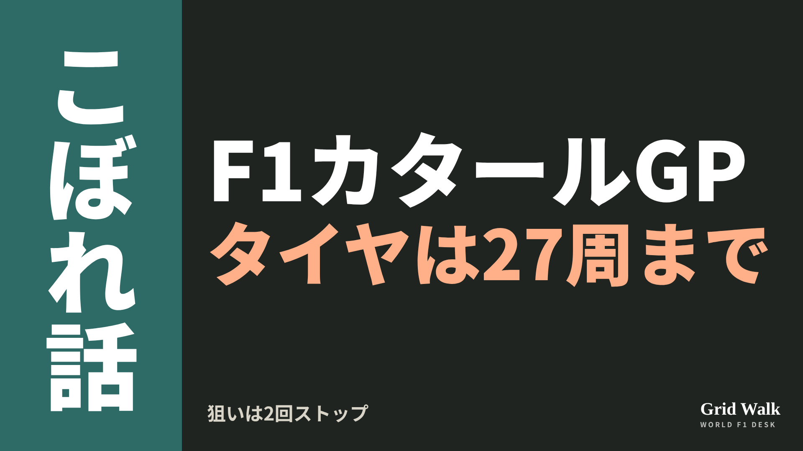<button class="cp dl" data-img="img/x_qatar-tyre-stint-limit-20261121.png" data-name="x_qatar-tyre-stint-limit-20261121.png">ダウンロード</button></li>
<li class="st"><div class="hd"><b>① noteをシェアするときの文</b></div><div class="bx" id="p7x0">来週のカタールGPも、タイヤ1セットの周回に上限があり、去年より2周長い27周になると、ピレリのベラが報道陣に話しました。57周の決勝で2回のピットストップを求めるためです。noteにまとめました #F1jp #カタールGP #ピレリ</div><button class="cp" data-plain="p7x0">コピー</button></li>
<li class="st"><div class="hd"><b>② ①への返信</b></div><div class="bx" id="p7x1">ほかの海外記事も読みたい方は、F1 Grid Walkへ。
https://f1gridwalk.github.io/lens/qatar-tyre-stint-limit-20261121/?utm_source=x&amp;utm_campaign=qatar-tyre-stint-limit-20261121</div><button class="cp" data-plain="p7x1">コピー</button></li>
<li class="st"><div class="hd"><b>③ ②への返信</b></div><div class="bx" id="p7x2">毎日の海外F1ニュースは、日本語でこちらにまとめています。
https://f1gridwalk.github.io/</div><button class="cp" data-plain="p7x2">コピー</button></li>
</ol></section><section class="part" id="p8"><h2><span class="tag">OFF GRID</span>ウォルフの若手給料案、FIAに退けられる　「あまり点数は稼げなかった」</h2><p class="sub">サイトに公開：15:56</p><ol class="steps">
<li class="st im"><div class="hd"><span class="no">1</span><b>見出し画像</b><em>画像</em></div>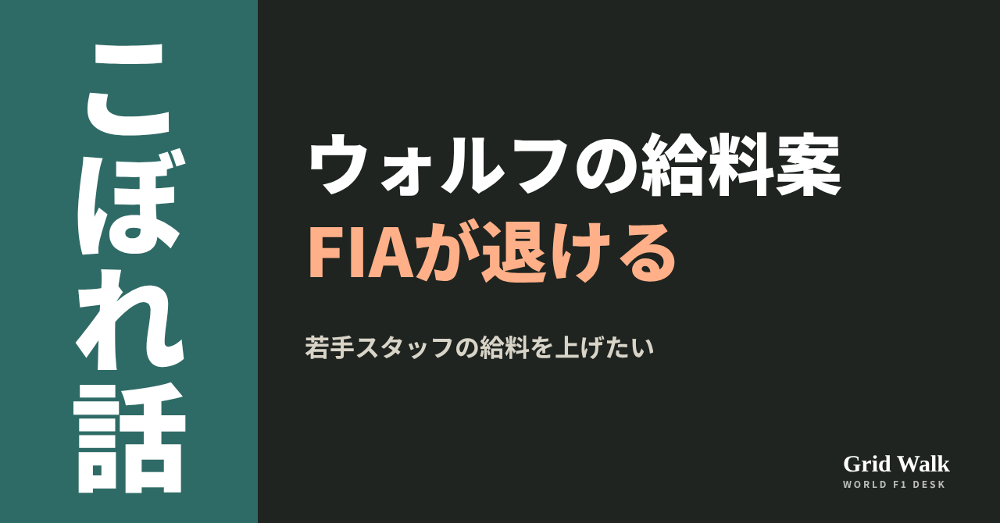<button class="cp dl" data-img="img/wolff-young-engineers-cost-cap-20261121.png" data-name="wolff-young-engineers-cost-cap-20261121_見出し画像.png">ダウンロード</button></li>
<li class="st"><div class="hd"><span class="no">2</span><b>タイトル</b></div><div class="bx" id="p8t">ウォルフの若手給料案、FIAに退けられる　「あまり点数は稼げなかった」</div><button class="cp" data-plain="p8t">タイトルをコピー</button></li>
<li class="st"><div class="hd"><span class="no">3</span><b>本文</b></div><div class="bx tall" id="p8r"><p>若手のスタッフに、もう少し良い給料を払えるようにしてほしい。メルセデスのトト・ウォルフ代表がそうFIAに持ちかけ、うまくいかなかったことを明かしました。イギリスのThe Raceによると、話したのはサンパウロGPの週末で、相手はイギリスのSky Sports F1です。</p><p>上限の外に置ける費用の解説と、元の記事へのリンクはサイトで → <a href="https://f1gridwalk.github.io/lens/wolff-young-engineers-cost-cap-20261121/?utm_source=note&amp;utm_campaign=wolff-young-engineers-cost-cap-20261121">https://f1gridwalk.github.io/lens/wolff-young-engineers-cost-cap-20261121/?utm_source=note&amp;utm_campaign=wolff-young-engineers-cost-cap-20261121</a></p><blockquote><p>「僕たちが考えたのは、チームに入ってくる若手のスタッフに、もっと良い給料を払える枠を持つことだった」「最初の5年、6年、7年のあいだ、給料が抑えられたままにならないように」（ウォルフ、Sky Sports F1。RacingNews365／イギリスが伝えた）</p></blockquote><p>The Raceは11月14日、メルセデスは長くこうした仕組みを提案してきたものの、退けられたと書いています。サイトの要約は https://f1gridwalk.github.io/news/en-therace-aduo-for-teams-fia-commission/ にあります。</p><h2>ウイングではなく、人に使うお金</h2><blockquote><p>「だからFIAに、枠をくれと持ちかけた。フロントウイングを増やすためではなく、給料を少し上げるためだ。予算上限が、そのすべてを抑えているから」「もちろん、それではあまり点数は稼げなかった」（ウォルフ、Sky Sports F1。RacingNews365／イギリスが伝えた）</p></blockquote><p>RacingNews365によると、予算上限の今の基本額は2億1500万ドル。ドライバーの報酬と、チームで報酬が高い上位3人は上限の外ですが、若手のスタッフは上限の中に入ります。この形が給料の伸び悩みや人の入れ替わりにつながっているとされる、とも書いています。上限の外に置ける費用は、用語解説 https://f1gridwalk.github.io/deep/rules/cost-cap-exclusions/ で。</p><h2>上位3人だけ、という線</h2><p>The Raceは、部品に使うお金と人に使うお金を分けるべきだ、という声が勢いを増していると書いています。今、スタッフで上限の外に置けるのは報酬の上位3人だけ。これを最大300人まで広げる話も過去にありましたが、網が広すぎて上限が効かなくなると考えられているそうです。記事は、才能のある人がテック企業の高い条件に引き抜かれ、F1の外のレースのほうが稼げるという話も多いと伝えています。</p><h2>順位で差をつける案には反対</h2><p>一方でウォルフ代表は、ウィリアムズのジェームズ・ボウルズ代表が求める、順位に応じて使える額を変える仕組みには否定的です。RacingNews365は10月18日、報道陣に話したこんな言葉を伝えています。</p><blockquote><p>「個人的には、順位をもとに調整する考え方は好きではない」「僕にとってBoP（性能調整）は、頭に血がのぼるようなものだ」（ウォルフ、RacingNews365／イギリス）</p></blockquote><p>同じ記事によると、ウォルフ代表が望むのは、新しいフロントウイングではなく、低い給料の人のための枠を上限の中に広げることです。ただ、それにも難しさがあると認めています。</p><blockquote><p>「小さなチームは、僕たちが博士号を持つ人のために、予算上限で500万多く使えるのを喜ばないだろう」（ウォルフ、RacingNews365／イギリス）</p></blockquote><p>The Raceによると、ボウルズ代表の案はチーム版ADUOとして、翌週のF1委員会の議題に入りました。仕組みと票読みは https://f1gridwalk.github.io/deep/rules/capex/ にまとめています。</p><p>編集部としては、ウォルフ代表の案は、順位で差をつけるのではなく、人への支出だけを別にする考え方だと見ています。ただ本人も認めるとおり、大きなチームが得をする話と受け取られやすく、小さなチームを納得させられるかが分かれ目になりそうです。</p><p><strong>予算上限の中で、若手スタッフの給料だけは別の扱いにすべきだと思いますか？</strong></p><p>━━━━━━━━━━</p><p><strong>F1 Grid Walk では、世界のF1ニュースを毎日日本語でまとめています。</strong></p><p>海外の記事の要約を、毎日載せています。</p><p><a href="https://f1gridwalk.github.io/">https://f1gridwalk.github.io/</a></p><p>ほかの海外記事も読みたい方は、F1 Grid Walkへ。</p><p><a href="https://f1gridwalk.github.io/lens/wolff-young-engineers-cost-cap-20261121/">https://f1gridwalk.github.io/lens/wolff-young-engineers-cost-cap-20261121/</a></p><p>━━━━━━━━━━</p><p><a href="https://racingnews365.com/toto-wolff-reveals-major-fia-rejection-suggestion-didnt-score-brownie-points">出典：RacingNews365（イギリス）</a></p><p><a href="https://www.the-race.com/formula-1/aduo-for-teams-to-be-discussed-by-f1/">出典：The Race（イギリス）</a></p><p><a href="https://racingnews365.com/toto-wolff-voices-red-mist-opposition-to-f1-rule-change-and-offers-major-warning">出典：RacingNews365（イギリス）</a></p></div><button class="cp" data-rich="p8r">本文をコピー</button></li>
<li class="st"><div class="hd"><span class="no">4</span><b>ハッシュタグ</b></div><div class="bx" id="p8h">#F1 #F1jp #メルセデス #ウォルフ #予算上限 #コストキャップ #ボウルズ #F1こぼれ話 #OFFGRID</div><button class="cp" data-plain="p8h">タグをコピー</button></li>
</ol><h3 class="xh">X</h3><ol class="steps">
<li class="st im"><div class="hd"><b>X用の画像</b><em>画像</em></div>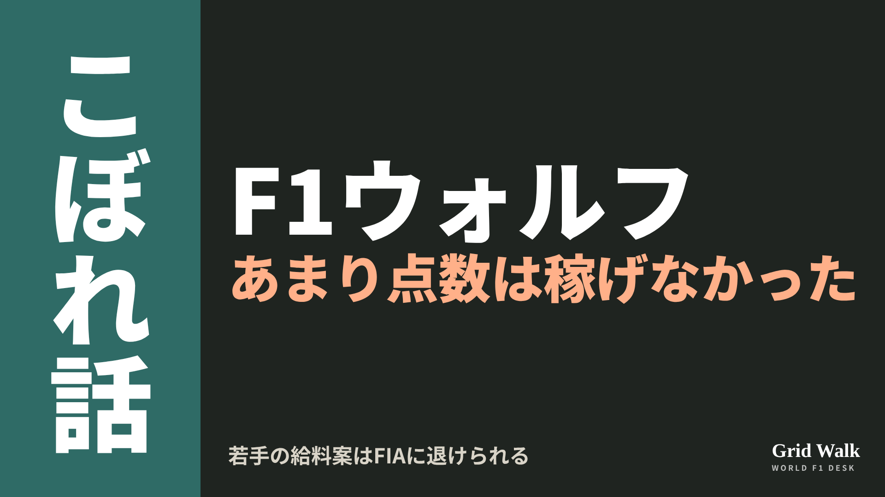<button class="cp dl" data-img="img/x_wolff-young-engineers-cost-cap-20261121.png" data-name="x_wolff-young-engineers-cost-cap-20261121.png">ダウンロード</button></li>
<li class="st"><div class="hd"><b>① noteをシェアするときの文</b></div><div class="bx" id="p8x0">メルセデスのウォルフ代表が、若手スタッフの給料を上げるための予算上限の枠をFIAに持ちかけていました。本人は「あまり点数は稼げなかった」。noteにまとめました #F1jp #ウォルフ #メルセデス</div><button class="cp" data-plain="p8x0">コピー</button></li>
<li class="st"><div class="hd"><b>② ①への返信</b></div><div class="bx" id="p8x1">ほかの海外記事も読みたい方は、F1 Grid Walkへ。
https://f1gridwalk.github.io/lens/wolff-young-engineers-cost-cap-20261121/?utm_source=x&amp;utm_campaign=wolff-young-engineers-cost-cap-20261121</div><button class="cp" data-plain="p8x1">コピー</button></li>
<li class="st"><div class="hd"><b>③ ②への返信</b></div><div class="bx" id="p8x2">毎日の海外F1ニュースは、日本語でこちらにまとめています。
https://f1gridwalk.github.io/</div><button class="cp" data-plain="p8x2">コピー</button></li>
</ol></section></main><script>
function done(b,msg){const t=b.dataset.t||b.textContent;b.dataset.t=t;b.classList.add('ok');b.textContent=msg||'コピーしました';setTimeout(()=>{b.classList.remove('ok');b.textContent=t},2000)}
function selectEl(el){const r=document.createRange();r.selectNodeContents(el);const s=getSelection();s.removeAllRanges();s.addRange(r)}
async function rich(el,b){
  try{await navigator.clipboard.write([new ClipboardItem({'text/html':new Blob([el.innerHTML],{type:'text/html'}),'text/plain':new Blob([el.innerText],{type:'text/plain'})})]);done(b);return}catch(e){}
  selectEl(el);let ok=false;try{ok=document.execCommand('copy')}catch(e){}
  if(ok){getSelection().removeAllRanges();done(b)}else{done(b,'選択しました。コピーしてください')}}
async function plain(el,b){
  try{await navigator.clipboard.writeText(el.innerText);done(b);return}catch(e){}
  selectEl(el);let ok=false;try{ok=document.execCommand('copy')}catch(e){}
  if(ok){getSelection().removeAllRanges();done(b)}else{done(b,'選択しました。コピーしてください')}}
let dlns=null;(async()=>{try{dlns=await window.claude?.use?.("downloads")}catch(e){dlns=null}})();
async function img(src,b){
  b.dataset.t=b.dataset.t||b.textContent;
  if(!dlns){try{dlns=await window.claude?.use?.("downloads")}catch(e){}}
  if(!dlns){b.textContent='ダウンロードできませんでした';setTimeout(()=>{b.textContent=b.dataset.t},3500);return}
  try{const blob=await fetch(src).then(r=>r.blob());b.textContent='保存の確認を開いています…';
    await dlns.save({filename:b.dataset.name,data:blob});done(b,'ダウンロードしました')}
  catch(e){const c=e&&e.code;b.textContent=c==='declined'?'キャンセルしました':c==='rate_limited'?'少し待ってからもう一度押してください':'ダウンロードできませんでした';setTimeout(()=>{b.textContent=b.dataset.t},3500)}}
document.querySelectorAll('.cp').forEach(b=>b.addEventListener('click',()=>{
  if(b.dataset.rich)rich(document.getElementById(b.dataset.rich),b);
  else if(b.dataset.plain)plain(document.getElementById(b.dataset.plain),b);
  else img(b.dataset.img,b)}));
</script>